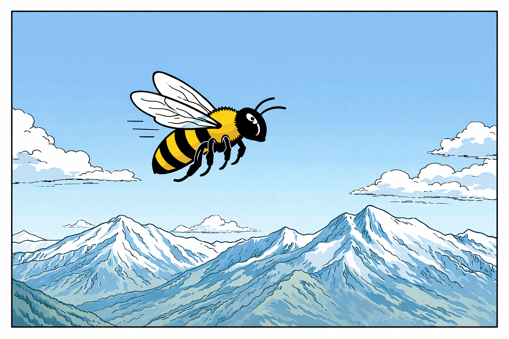

The Terrace
A Play

(A terrace of a grand hotel in the Alps. Late afternoon. Far below, something is being built.)
(A man sits at a table, looking out. Another approaches him.)
ZOLA
It’s beautiful here.
NIETZSCHE
The air is dry.
(Zola sits at the table.)
ZOLA
Mind if I join you?
NIETZSCHE
Apparently you already did.
ZOLA
Let me introduce myself.
NIETZSCHE
I know who you are.
ZOLA
Your moustache looks familiar.
(Pause.)
ZOLA
Let me see.
(Another pause.)
ZOLA
Ah, now I remember. It’s such a pleasure, Mr. Strauss.
NIETZSCHE
I compose in words.
ZOLA
Of course you do.
(A further pause.)
ZOLA
Ah, now I remember. Zarathustra, the book. I read it in the Panthéon.
NIETZSCHE
That is where I reside.
ZOLA
Strange that our paths haven’t crossed there.
(A slight beat.)
ZOLA
We should have some coffee and cake.
NIETZSCHE
Coffee should be given up—coffee makes one gloomy.
(Zola looks toward the waitress.)
ZOLA
Two pieces of cake, one coffee, and one tea, please.
NIETZSCHE
Tea is beneficial only in the morning.
ZOLA
You’ll manage.
NIETZSCHE
I do not manage. I stand above.
(A few minutes pass. A waitress brings two pieces of cake, the coffee, and the tea. They eat in silence. After a short while, a small honey bee arrives.)
THE BEE
Good afternoon. Much appreciated.
NIETZSCHE
I am weary of my wisdom.
ZOLA
I quite like this cake.
THE BEE
Me too.
ZOLA
We are privileged.
THE BEE
Me not.
ZOLA
What is your complaint, little fellow?
THE BEE
I gather all day. Others eat.
NIETZSCHE
To equals, equality; to unequals, inequality.
ZOLA
You are rather harsh.
ZOLA
He is a small, weak little fellow.
NIETZSCHE
The weak and the botched shall perish: first principle of our humanity.
(He strikes at the bee.)
NIETZSCHE
And they ought even to be helped to perish.
(The bee darts toward his nose.)
THE BEE
Please. And do not forget: I have a sting.
NIETZSCHE
You have a sting. He delights in stink.
ZOLA
There was so much of it. It had to be described.
NIETZSCHE
Positivism halts at phenomena. You interpreted.
THE BEE
The phenomenon is this: there are bees. And there are super-bees.
NIETZSCHE
Yes.
ZOLA
Super-bees merely extract rents. Look at the construction below.
THE BEE
That’s where my hive is.
ZOLA
That’s where the stink is. Where workers toil and sweat.
NIETZSCHE
I would rather perish than work without delight in my labor.
THE BEE
I cannot choose.
ZOLA
Nor can they, down there.
NIETZSCHE
Necessity and freedom are the same thing.
THE BEE
Is that meant as a consolation?
NIETZSCHE
It is meant as it is meant.
ZOLA
The system is engineered. Powerful men at play.
THE BEE
Here it has just evolved.
ZOLA
We cannot let it stand. We need a solution.
THE BEE
Let me know when you have one.